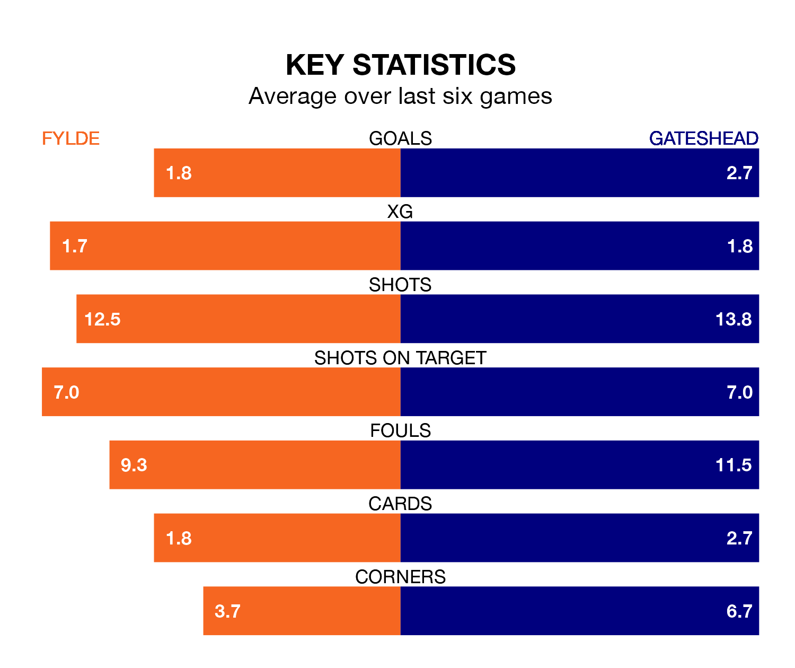

Gateshead visit Fylde at the Mill Farm Stadium on Monday on the back of three consecutive wins in the National League.
Gateshead have picked up 12 points from their last six games, and they face a Coasters side who have also won their last two matches, and collected 10 points from the last possible 18.
With 83 goals in 41 games so far this season, Gateshead are the league's second-highest scorers with 2.0 goals per game. And they are conceding fewer than average, letting in 57 goals at a rate of 1.4 per game.
Fylde are also above average scorers, with 1.7 goals per game, compared to a league average of 1.5. They have conceded 1.8 goals per game.
In the last 10 years, Fylde and Gateshead have played each other on nine occasions. Fylde won eight of them and they drew once.
On average, the Coasters scored 1.7 goals and the Tynesiders 0.1 in those matches.
Their last meeting was on October 28, when Fylde won 4-0 away.
The Tynesiders are fourth in the table after 41 games, of which they have won 20 and drawn nine, earning 69 points.
The Coasters are nine places behind the away team in 13th, with 14 wins and 10 draws putting them on 52 points.
Fylde's last match was on Friday, a 3-1 win against Oldham Athletic, with Adam Long, Ethan Mitchell and Nicholas George Haughton getting the goals for the Coasters.
Gateshead beat Rochdale 1-0 last time out, also on Friday, with Dajaune Brown on the scoresheet.
Updated: 10:31 (UTC), 31/03/24